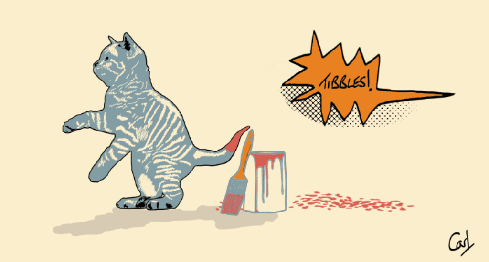
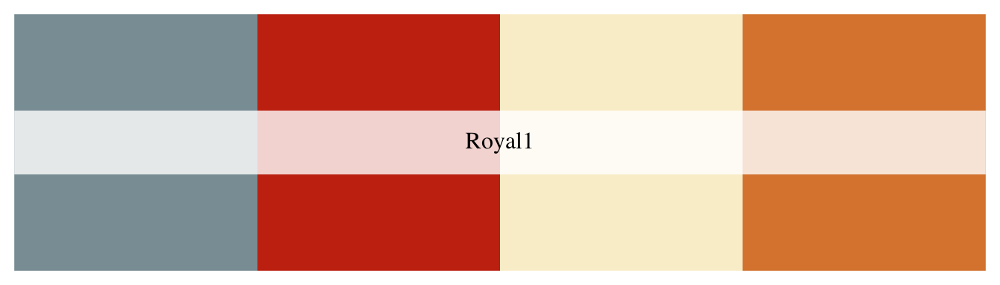
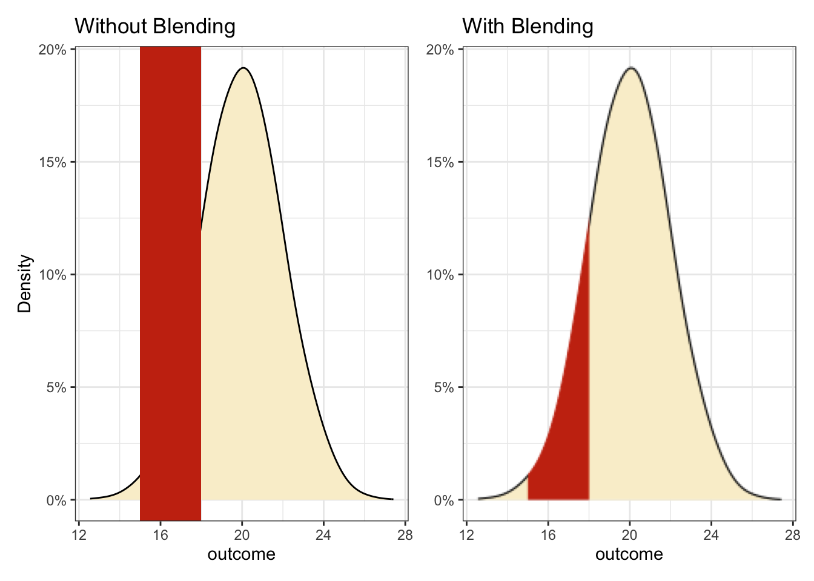
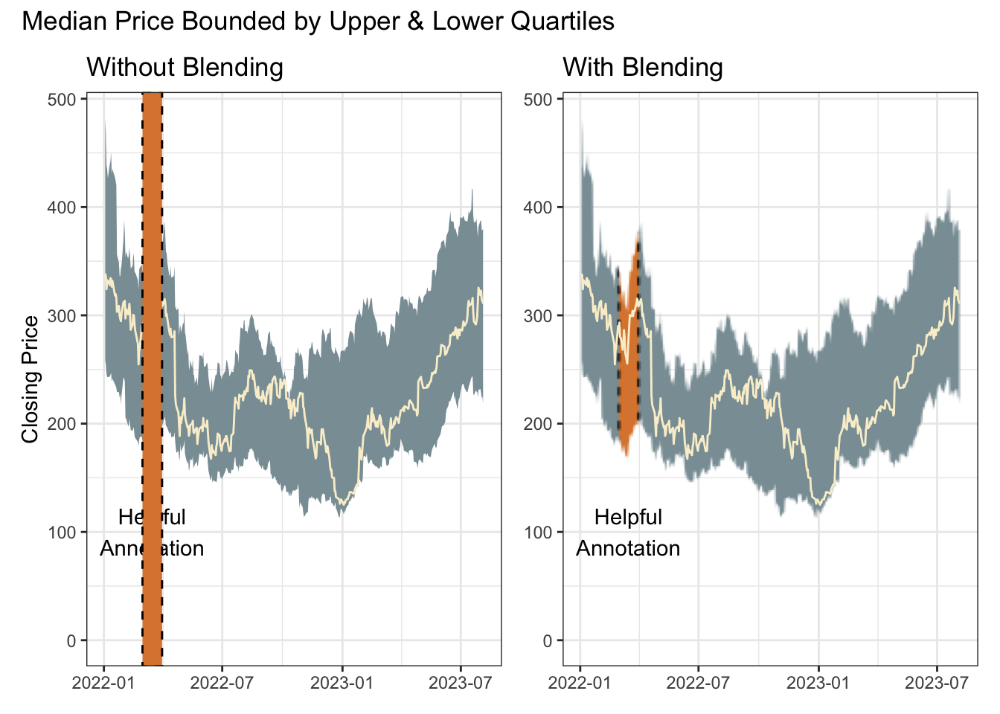

library(conflicted)
library(tidyverse)
conflict_prefer_all("dplyr", quiet = TRUE)
conflict_prefer("as_date", "lubridate")
library(scales)
library(ggfx)
library(patchwork)
library(wesanderson)
library(clock)
library(tidyquant)Painting Tails
R
special effects
If you’re a cat, go find the nearest open pot of paint. But if you’re a data scientist, what to do?

There are techniques for painting a region under a curve. But the experimental ggfx package offers an interesting alternative solution based on the blending modes familiar to users of Photoshop.
theme_set(theme_bw())
(cols <- wes_palette("Royal1"))
The advantage here is that the tail-painting aesthetic needs no information about the shape of the curve; only the limits on the x-axis.
The left plot shows the raw components without blending. The right plot is only retaining the red where there is a layer below.
p0 <- tibble(outcome = rnorm(10000, 20, 2)) |>
ggplot(aes(outcome)) +
scale_y_continuous(labels = label_percent())
p1 <- p0 +
geom_density(adjust = 2, fill = cols[3]) +
annotate("rect",
xmin = 15, xmax = 18, ymin = -Inf, ymax = Inf,
fill = cols[2]
) +
labs(title = "Without Blending", y = "Density")
p2 <- p0 +
as_reference(geom_density(adjust = 2, fill = cols[3]), id = "density") +
with_blend(annotate("rect",
xmin = 15, xmax = 18, ymin = -Inf, ymax = Inf,
fill = cols[2]
), bg_layer = "density", blend_type = "atop") +
labs(title = "With Blending", y = NULL)
p1 + p2
Of course the red box could also be layered behind a density curve with alpha applied so it shows through. But if the preference is tail-only colouring, it’s a neat solution.
Blending is actually a handy solution for any awkward shape. The same technique is used here with a time series ribbon summarising the median, lower and upper quartiles of a set of closing stock prices.
Note
Try this patch if having problems with tq_get
This chunk is using the development version of dplyr which introduces temporary grouping with .by.
tickrs <- c("AAPL", "NFLX", "TSLA", "ADBE", "META", "GOOG", "MSFT")
p0 <- tq_get(tickrs, get = "stock.prices", from = "2022-01-01") |>
filter(!is.na(close)) |>
reframe(
close = quantile(close, c(0.25, 0.5, 0.75)),
quantile = c("lower", "median", "upper") |> factor(),
.by = date
) |>
pivot_wider(names_from = quantile, values_from = close) |>
ggplot(aes(date, median)) +
annotate("text",
x = ymd("2022-03-16"), y = 100,
label = "Helpful\nAnnotation", colour = "black"
) +
scale_y_continuous(limits = c(0, NA)) +
labs(x = NULL)
p1 <- p0 +
geom_ribbon(aes(ymin = lower, ymax = upper), fill = cols[1]) +
geom_line(colour = cols[3]) +
annotate("rect",
xmin = ymd("2022-03-01"), xmax = ymd("2022-03-31"),
ymin = -Inf, ymax = Inf,
fill = cols[4], colour = "black", linetype = "dashed"
) +
labs(title = "Without Blending", y = "Closing Price")
p2 <- p0 +
as_reference(geom_ribbon(aes(ymin = lower, ymax = upper),
fill = cols[1]), id = "ribbon") +
with_blend(
annotate(
"rect",
xmin = ymd("2022-03-01"), xmax = ymd("2022-03-31"),
ymin = -Inf, ymax = Inf,
fill = cols[4], colour = "black", linetype = "dashed"
),
bg_layer = "ribbon", blend_type = "atop"
) +
geom_line(colour = cols[3]) +
labs(title = "With Blending", y = NULL)
p1 + p2 +
plot_annotation(title = "Median Price Bounded by Upper & Lower Quartiles")